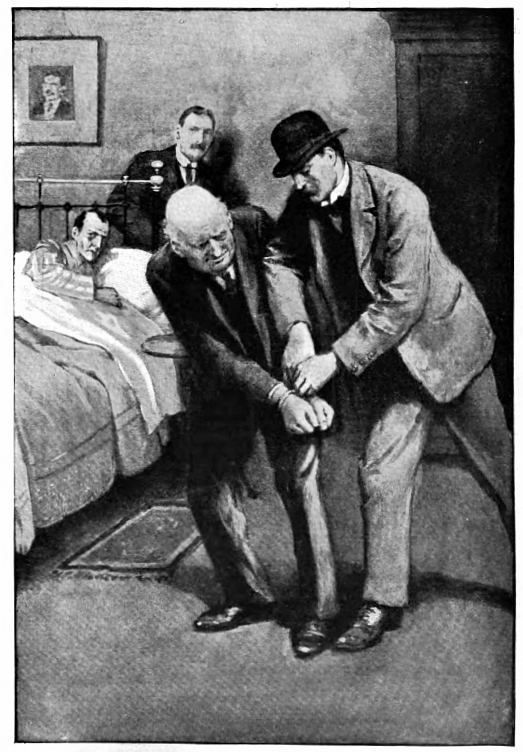

ハドソン夫人――彼女はシャーロック・ホームズの家主であるが、辛抱強い女性である。二階の部屋には四六時中、おかしな、しかも大抵は歓迎できない連中が上がり込むばかりでなく、その居住者ときたら生活が突飛で不規則で、これにはさすがの彼女もあきれ顔だったろう。ホームズは信じられないほどだらしないし、とんでもない時間に楽器をかき鳴らす。室内での気まぐれな射撃訓練、時々異臭さえする妙な化学実験。それに加えて身辺には血と危険の匂いがするというのだから、ロンドン一最低の下宿人だ。だが一方で払いが良かった。私と同居していた時期の家賃をまとめれば、軽くあの家を買い取れたに相違ない。
家主はホームズに畏敬の念を抱いており、なす事がいかに常識に反していても、一言も口を挟もうとしなかった。それに彼女はホームズのことが好きだった。女性に対して非常に優しく、礼節を持って接したからだ。ホームズは一般に言う「女」を嫌い、信用しなかったが、それは常に対等な相手と見て、騎士たらんとしたからだ。彼女のホームズを慕う心は本物であると知っていたので、私の元を訪れてまで話す彼女の言葉に、私は耳を傾けたのであった。それは私が結婚して二年経った頃のことで、我が友人が今や哀れ、見るに堪えない状態に陥っているという話だった。
「今にも死にそうですの、ワトソンさま。」とハドソン夫人は言った。「この三日というもの、やつれる一方で、今日一日生きられますかどうか。それなのに医者は呼ぶなと。今朝などは頬がこけて、目をぎょろつかせるものですから、居ても立ってもいられなくなって。『お許しがあろうとなかろうと、ホームズさま、この足でお医者さまを呼びに参ります。』とわたくしは申し上げました。すると『ならばワトソンを。』とおっしゃいまして。片時も目を離したくはありません。死に目にお会いになれないかも。」
驚いた。今まで病気など一度もなかった彼のことだ。何も言わず外套と帽子をひっかけ、私は車中、事情を教えてくれと頼んだ。
「お話しできることがほとんどなくて。ちょうどロザハイズに出向して事件をお手がけで、河近くの並木道です。そこからこの病気をお持ち帰りに。水曜の午後から床にお就きになったまま、寝たきりなんです。この三日間は、喉に何もお通しになさらず。」
「そんな！ どうして今まで医者を？」
「お止めになるのです。あの方、強情でしょう？ ですから押し切れなくて。でも、もう永くはございません。わかります、ご覧になれば、すぐ。」
確かに本人は、見るも無惨な有様だった。霧深い十一月の日の薄明かりだ、病室は陰気な所となり、さらに寝台から私へ向けられた憔悴の顔が、私の肝を冷やす。熱のために目に力が入りすぎ、両頬には消耗性紅潮が見られ、唇は変色した
「どうも、ワトソン、ふたり揃って災難だね。」声は力無いが、いつも通りの気の置けない口ぶりだった。
「まったく君は！」と私は近づきながら叫ぶ。
「来るな！ 下がれ！」緊迫感のあるその鋭い声が、私の心に「危篤」の二文字を思い起こさせる。「近寄るなら、ワトソン、君にここから出ていってもらう。」
「なぜだね？」
「僕が嫌なんだ、それでいいだろう？」
なるほど、ハドソン夫人の言う通りだった。いつも以上に強情だ。とはいえ、その
「助けたいだけなんだ。」と私は言う。
「その通り！ 僕の言う通りにしてくれると何よりも助かる。」
「わかった、ホームズ。」
するとホームズも気を緩める。
「気を悪くしないでくれ。」と息も切れ切れに言った。
気の毒に、こんな有様で伏せる相手に、どうして怒ったりできよう。
「君自身のためだ、ワトソン。」と声をしぼる。
「私のため？」
「自分の身に起こった事態は把握している。スマトラのクーリー病だ――オランダ人の方が詳しいだろうが、それでもいまだに不明なことが多い。だがこれだけは確かだ。致死率が極めて高く、人に伝染しやすい。」
ホームズはまさに熱にうなされつつも、言葉を吐き、長い手をふるわせながら私に下がれと合図をする。
「接触感染するんだ、ワトソン――接触なんだ、近寄らなければ心配ない。」
「まったく、ホームズ！ 私がそんなことを気にするとでも、本気で思ってるのかね！ 見ず知らずの人でも何ともない。そんなことで、古なじみの義務を放棄するわけないではないか。」
前へ踏み出そうとすると、鬼の形相ではねつける。
「じっとするなら話をする。できなければ部屋を出てくれ。」
ホームズは世間の人々とは違う。その点はたぶんに尊重してきたので、意味が分からなくても、今まで彼の思うところには従ってきた。だが今回ばかりは医者としての使命がある。他の場所ならどこでも私は付き従うが、少なくとも病室では私の言うことを聞いてもらう。
「ホームズ。」と私は言った。「いつもとは違う。病人は子どもに過ぎない。だから診察する。好もうと好まざるとも、症状を診て君に手当を施す。」
ホームズは私のことを敵意むき出しで見つめる。
「どうしても医者にかからねばならぬのなら、せめて頼るになる奴にかからせてくれ。」と言うのだ。
「では、私では不足と？」
「友情については頼りにしてる。だが事実は事実だ、ワトソン、つまるところ、君はごく限られた経験と並の免状しかない普通の開業医に過ぎない。あまり言いたくはないが、どうしてもと言うならやむを得ない。」
私はひどく傷ついた。
「君らしくもない言葉だ、ホームズ。今ので君の神経の状態がはっきりした。だが、頼りないと言われたものを押しつけるつもりもない。ジャスパ・ミーク勲士かペンローズ・フィッシャなり、このロンドンにいる適当な人物を連れてこよう。いいかい、誰かしらには診てもらう、これは決まりだ。私がここに突っ立ったまま、自分で診ることも誰かを連れてきて診てもらうこともなく、見殺しに出来ると思ったら、とんだ見込み違いだ。」
「善意だとは思うが、ワトソン。」病人はむせびともわめきともつかない声を立てる。「君が無知と立証しようか？ 知っているのかね、ほら、タパヌリ熱を？ 黒色台湾熱が分かると言うのかね？」
「どちらも初耳だ。」
「病気という問題が多数、奇病がいくつも潜んでいるのだ、東洋には。ワトソン。」一文一文を息を継いでは言う。「犯罪医学方面の調べものをしているうち、知識がついた。そのさなかに、この病にかかったのだ。君には手に負えない。」
「かもしれん。だが、ちょうどアインストリ博士がロンドンにご滞在だそうだ。今の熱帯病の第一人者だよ。もう抗議は受け付けない。ホームズ、今すぐにでも連れてくる。」と私は決心して扉の方を向く。
このときほど肝を抜かれたことはない。刹那、虎のように飛び抜けて、この瀕死の病人が行く手を遮ったのだ。カチャリと鍵をかけ、次の瞬間には、よろよろと寝台に引き返し、ない力を無理に振り絞ったため、あえぎながらぐったりとする。

「まさか力づくで鍵を取りはしないね、ワトソン。こっちのものだ。出られぬよ、僕がいいと言うまで外に出さない。だが話は聞くつもりだ。」（と一気に言葉を吐いた。合間にはひどく苦しそうに息をする。）「君は心から僕の親身になっている。もちろん承知している。呼んできてもいいが、体力が戻るまで余裕をくれ。今は待て、ワトソン、今は駄目だ。四時か。六時には出てもいい。」
「正気を失ってるね、ホームズ。」
「ほんの二時間だ、ワトソン。六時に出る、約束しよう。おとなしく待ってくれるか。」
「どう答えても一緒だろう？」
「その通りだ、ワトソン。ありがとう、布団は自分で何とかする。そこから近寄らないでくれ。ところでワトソン、もうひとつ希望の条件がある。呼ぶなら、先ほど挙げた人物ではなく、僕の選んだ人にしてほしい。」
「承知した。」
「君が部屋へ入るや言ったあの言葉、わかっているね、ワトソン。そこに本があるだろう。少し疲れた。絶縁体に電気を流す電池の気持ちとは、こんな感じだろうか。六時だ、ワトソン、そのときまた話す。」
だがその時刻よりもずいぶん早く話すことになった。その様は、先ほどホームズが扉へ駆け寄ったときに負けず劣らず肝を抜かれた。私はしばらくのあいだ寝台にじっと横たわっている病人を見てたたずんでいた。顔はほとんど寝具で覆われ、眠り込んでいるように見えた。座って読書をする気にもなれず、室内を歩き回り、四方の壁に掛けられた有名な犯罪者たちの写真を見物していた。あてもなくうろつき、やがて炉棚のところへ来た。パイプ架け、刻み煙草入れ、注射器、折りたたみナイフ、リヴォルヴァの弾薬、その他がらくたがその上に散らかっていた。それらの真ん中に、すべり蓋のついた白黒で象牙の小箱があった。しゃれた小物で、詳しく見ようと私が手を伸ばすと――ものすごい叫び声が上がった――外の通りにまで聞こえそうなわめき声だ。そのすさまじさに全身がぞくりとして髪が逆立つ。振り返ると目の前に、引きつった顔と色を失った目が現れる。手に小箱を持ったまま、私はその場に立ちすくんだ。

「下に置くんだ！ 置け、今すぐ、ワトソン――すぐ置くんだ！」私が箱を炉棚に戻すや、ホームズは頭を枕に沈め、ほっとして深く息を吐く。「自分のものには触れられたくない。ワトソン、知っているくせに。我慢の限界を超えている。君も医者だろう――患者を施設送りにする気か。座ってくれ、僕を休ませてくれ！」
この出来事は私の心の中に気まずいものを残した。こんな乱暴で理不尽な苛立ちを突っ慳貪にぶつけられても、普段の落ち着きとはほど遠いので、心がひどく乱れていると思わざるを得ない。およそ崩壊の中でも、高潔な心の壊れるほど嘆かわしいものはない。私は憂鬱な気分でじっと約束の時間まで座っていた。私に同じくホームズも時計を気にしていたようだった。六時になるかならないかというとき、先ほどと同じ勢いで話し始めたのだ。
「さて、ワトソン。」とホームズ。「懐に小銭はあるか？」
「ああ。」
「銀貨は？」
「それなりに。」
「半クラウンが。」
「五枚。」
「うむ、少ない！ 少なすぎる！ 残念だね、ワトソン！ だがその量なら時計入れにも入る。残りの金をみんな腰の左に入れるんだ。ありがとう。これで前よりも釣り合いが取れた。」
分別のない譫言だ。ホームズは身を震わせ、再び咳とも嗚咽ともつかない音を出す。
「ではガスをつけたまえ。ワトソン、気をつけてくれ、ちょっとでも半分以上の明るさになると困る。本当に注意したまえよ。ありがとう、結構だ！ いや、覆いを掛けるに及ばんよ。今度はすまないが、この机の上に、手が届くよう手紙と紙を頼む。ありがとう。今度は炉棚からゴミを少々。結構だ、ワトソン！ そこに角砂糖鋏がある。すまないがそいつであの象牙の小箱を持ち上げてくれ。その紙のあたりに置くんだ。よろしい！ では、君はカルヴァトン・スミス氏を連れてきてよい。ロウア・バーク街十三だ。」
実を言うと、医師を連れてくる気はやや薄らいでいた。気の毒にホームズの口からは譫言しかでないので、残していくのは危ういと思えたからだ。とはいえ、今となっては先に拒んだときと同じくらい、執拗に指名した人物の診察を受けたがっていた。
「そんな名前、初耳だが。」と私は言った。
「おそらくそうだろう、ワトソンくん。聞いて驚くだろうが、この病にこの世で最も熟知している人物は、医者ではなく農園主なんだ。カルヴァトン・スミス氏はスマトラの有名な入植民で、ちょうどロンドンに来ている。この病が彼の農園で発生したとき、医療も受けられない奥地だったため、やむなく自力で研究し、多大な成果を上げた。彼は実に規則正しい人物だから、六時以降に行ってほしかった。そのときなら書斎にいるとわかっているからだ。何とか君が彼を口説いて連れてきて、彼だけが持つこの病の知識の、一番の趣味である研究の恩恵を受けられれば、僕は助かるに相違ない。」
私はホームズの発言を前後まとまったものとして書き、そのあいだに挟まれるあえぎ声や、頻りに動く手などを、彼の受けている苦しみとして描き出すつもりはない。ホームズの様子は一緒にいたわずか二、三時間のうちに、いっそう悪くなっている。消耗熱の発疹も顕著になり、両目も以前より深くくぼみ、いっそうぎらぎらしている上に、冷や汗さえ額に認められる。とはいえ、それでも口調はいつもの慇懃無礼。息を引き取るまでずっと負けず嫌いでありたいのだ。
「彼には、僕がどんな様なのか正確に伝えるんだ。」とホームズは言う。「思ったそのままの印象を伝えたまえ。なるほど、わからない。なぜ大洋の底一面が牡蠣で埋め尽くされないのか、あれほど多産の生物なのに。ああ、何を言っているのだ、僕は！ 不思議だ、脳が脳を統御するなんて！ 僕は何の話をしていた、ワトソン？」
「カルヴァトン・スミス氏に私が何を言うか。」
「ああ、そうだった。僕の命はそれ次第だ。よろしく頼んでくれ、ワトソン。互いに相手をよく思っていない。氏は自分の甥を、ワトソン――始末したと僕は疑っていて、それとなく悟らせたんだ。その少年はむごい死に様でね。氏は僕を憎悪している。なだめてくれ、ワトソン。頼んで、頭を下げてくれ。何とかしてここへ呼んでくれ。僕を救えるのは――彼だけなんだ！」
「辻馬車に連れ込んでもいい、どうしても運ぶっていうんなら。」
「そんな手はなしだ。口説いて来てもらうんだ。そうしたら先に帰ってくるんだ。一緒には行けないと何か口実を作って。忘れるな、ワトソン。へまはせぬように。今までも一度としてなかったが。間違いない、生物の増殖を妨げる自然の敵がいるのだ。君と僕は、ワトソン、自分の本文を果たしている。だから、世界を牡蠣などに蹂躙させてたまるか。いやいや、恐ろしい！ 君は思うところをみんな伝えるんだ。」
立派な賢者が一つ覚えの子どものようにわめき立てる姿に胸を詰まらせつつ、私は彼のもとを後にした。ホームズは私に鍵を手渡したので、安心して持ってゆくことにした。これで中から閉ざされても平気だ。ハドソン夫人は廊下で待っていて、震えながら泣いていた。階段へ向かう途中、ホームズの高くか細い声で、譫言のような歌が聞こえてくる。下で辻馬車の呼子を吹いて待っていると、ひとりの男が靄のなかから近づいてきた。
「ホームズさんの容態は？」と男は訊いてきた。
古なじみのモートンだった。スコットランド・ヤードの警部で、ツイードの私服を着ていた。
「重態です。」と私は答えた。
モートンはいささか妙な顔で私を見つめた。目は刃物のようだが、それを見ず顔だけに明かり窓の光を当てたら、喜んでいるとも受け取れる、といった具合だ。
「そんな話らしいですね。」と警部は言う。
馬車がやってきたので、私はお暇した。
ロウア・バーク街は立派な邸宅の連なった通りで、ノッティング・ヒルとケンジントンとのちょうど境目にあった。しかも馬車を寄せた家というのは、たいそうご立派なものらしく、古風な鉄柵、荘重な門扉、真鍮の造作、そして色電灯の放つ紫の光を背に受け現れた威儀ある執事に至るまで、見事にすべて調和していた。
「はい、カルヴァトン・スミスさまはご在宅です。ワトソン博士、かしこまりました、名刺をお預かりします。」
私の貧相な名前や肩書は、カルヴァトン・スミス氏に何の感銘も与えなかったようだ。半開きの扉から、威張り腐った高く鋭い声が聞こえる。
「誰かねェ、こいつ？ 何用？ ふん、ステイプルズ、何度言ったらわかるの、研究の最中はボクの邪魔をするなってさァ。」
すると執事のなだめる声がかすかに漏れ聞こえる。
「だァから会わないって、ステイプルズ。そんなことでボクのやることは止められないよ。ボクは留守。そう伝えて。朝に出直せって、しつこいんならさァ。」
再び穏やかな声。
「わかった、わかった、そう言えばァ？ 朝にするか、あきらめるかするでショ。今は手が離せないの。」
私はホームズのことを考えた。病床でもがき、おそらくいつ助けを連れ帰るかと時を数えているだろう。今は礼儀にこだわっている時ではない。ホームズの命は私の迅速な行動にかかっている。執事が済まなそうに言伝を持ってくるより先に、脇をすり抜け、部屋に滑り込んだ。
激高の声をあげてひとりの男が、暖炉脇の

「何だよォ。」小男は高い金切り声で叫んだ。「どうして無断で入ってくるのさァ？ 明日の朝、会うって言付けし、た、じゃ、ない！」
「すいません。」と私は言った。「一刻の猶予もないのです。シャーロック・ホームズくんが――」
私が口にした友人の名は、この小男に不思議と効き目があった。怒りの色がたちまち顔から消え、むしろ緊張と警戒の色が差す。
「ホームズのところから来たの？」と小男が訊く。
「急いで出てきました」
「ホームズが何？ どうかしたのォ？」
「危篤です。だから参りました。」
その男は私に椅子を示し、自分の椅子に戻る。その際、一瞬、炉棚の上の鏡に顔が映った。間違いなく、そこには悪魔のほほえみが浮かんでいた。けれども、私はそのとき、それは面食らって血の気が引いているのだと思い直したのだ。なぜなら、そのすぐあと私の方へ向き直ると、その面差しは心から心配しているように見えたからだ。
「残念だァねェ。」と小男は言った。「ホームズくんとは、ちょっとした事件で関わり合いになったきりだ、け、ど、その才能と人物は尊敬してたんだよォ。カレは犯罪が趣味だけど、ボクは病の方がそれでねェ。カレには犯人が相手で、ボクは細菌さァ。それはボクの牢屋だねェ。」と壁際の机にある瓶や壺の列を指し示しながら続ける。「そこでゼラチン培養中のものにも、世界一の大悪党が、今、時を過ごしているんだよォ。」
「そのあなたの特殊な知識のために、ホームズくんがお目にかかりたいと、あなたを高く評価し、自分を救えるロンドン唯一の男であると考えています。」
小男はびっくりして、喫煙帽がつるりと床に滑りかかる。
「ドオシテ？」と小男は訊いた。「ホームズくんはどうしてボクが自分の窮地を救えると？」
「東洋の病に詳しいから、と。」
「しかし、どうしてまた、自分のかかっている病が東洋のだと考えたのカナ？」
「それは、仕事上の調査で、埠頭の中国人水夫に混じって働いていたからだと。」
カルヴァトン・スミス氏はにこやかに微笑み、喫煙帽を拾い上げた。
「ああ、なるほど――なるほどォ。」と小男。「キミが思ってるほど具合は悪くないと思うよォ。発病して何日ィ？」
「三日ばかり。」
「うなされるゥ？」
「時折。」
「ちょっ、ちょっ！ そりゃ深刻だねェ。呼ばれて行かなきゃ、人として駄目だよねェ。仕事の邪魔をされるの、すっごく嫌なんだけどォ、ワトソン博士、今日だけは本当に例外ですよォ。すぐお供しますヨ。」
私はホームズの指示を思い出した。
「実はまだ別の用件がありまして。」
「結構、ボクひとりで行くヨ。どこかにホームズくんの住所は控えてあったネ。大丈夫、遅くとも、三十分のうちには行くからねェ。」
私は不安いっぱいでホームズの部屋に戻った。万一のことが留守中に起こっているかもしれない。一安心できたのは、そのあいだにずいぶん快方へ向かっていたからだ。顔は依然と同じく青ざめていたが、うなされた気配もなく、確かに声は弱々しかったが、普段以上に口調はてきぱきとしていた。
「では、会ったのだね、ワトソン？」
「ああ、じきに来る。」
「でかした、ワトソン！ でかした！ 君は世界一の使者だ。」
「同行を希望していたよ。」
「ありえないよ、ワトソン。絶対にありえん話だ。何の病かは訊かれたか？」
「イーストエンドの中国人の話をした。」
「絶妙だ！ いや、ワトソン、君は友人としてできることをすべてやり遂げた。もうこの場から消えていいよ。」
「私は残って彼の所見を聞かなければ、ホームズ。」
「無論聞くべきだ。だが、僕はこう推理する。その所見とやらは、奴にふたりきりと思わせた方が、より率直で価値のあるものになるはずだ。この寝台の頭側の陰にちょうど隙間があるんだ、ワトソン。」
「おい、ホームズ！」
「他の選択肢はあるまいよ、ワトソン。この隙間は身を隠すのに適当でないし、それなりに疑われるかもしれない。でもそこしか、ワトソン、場所がない。」突然、ホームズは窶れた顔に緊張の色を見せて起き直った。「轍の音だ、ワトソン、急げ、ほら、僕が大事なら！ 身動きしないこと、何が起ころうと――何が起こったとしてもだ、いいかい？ 口を閉じて！ じっとしている！ 聞き耳を立てるんだ。」すると、その刹那、急に発作の勢いが抜けて、要領を得た命令口調がするすると錯乱気味の低くて聞きづらいぼやきに変わる。
その物陰に素早く身を隠すと、階段から足音が聞こえ、寝室の戸が開け閉めされる。すると驚いたことには、しばらく何の声もしない。ただ病人の重苦しそうな息づかいと喘ぎとが聞こえるのみだ。気配はある。人が寝台の脇に立ち、病人を見下ろしている。とうとう不気味な沈黙が破られた。
「ホームズゥ！」と声をあげる。「ホームズゥ！」眠りを揺さぶるような強い調子だ。「声は聞こえるゥ？ ホームズゥ？」そして、病人の肩をつかんで手荒く揺さぶっているのか、布ずれの音。
「君は、スミスくんか？」ホームズの小さな声。「来ないものと思っていた。」
その男は声を立てて笑った。
「ボクも夢にも思わなかった。」と小男は言う。「でも、ご覧の通り、ここにいる。怨みに徳をだよ、ホームズゥ――火をこれが
「素晴らしい人だ――人徳者だ。その特殊な知識には恐れ入ります。」
小男はにたりと笑う。
「そうだねェ。嬉しいことに、そう言ってくれるのはロンドンでもキミだけだ。自分の身に何が起こっているか、ご存じィ？」
「例のものです。」とホームズが言った。
「ああ！ 兆候に気づいてるゥ？」
「わかりすぎるほどに。」
「そう、自然なことだねェ、ホームズ。自然なことだよォ、万一、例のものだとしてもネ。もしそうなら、先が不安だねェ。ヴィクタはかわいそうに四日目で亡骸――健康な若者だった、の、に。ほら、キミが言ったみたいに、本当にびっくりだよォ。ロンドンのど真ん中で、片田舎のアジアの病気にかかるなんて――その病気って、ボクが特別に研究してたやつなんだけどねェ。不思議な偶然だネ、ホームズゥ。そこに気づいたキミはすっごく偉いけど、そこに因果を見るのは、ちょっと厳しいんじゃ、ない、の。」
「君の仕業だと分かっている。」
「え、分かる、知ってるゥ？ へぇ、証拠の出せないのに、それでもォ？ でも、どういうことォ？ 自分でボクについてそんな噂を流しておいて、いざ困ったらボクに助けてとすがりつく、の？ いったい何のおふざけ――ネェ？」
病人のぜえぜえという息づかいが聞こえてくる。「水をくれ！」と声を振り絞る。
「まさに今わの際だねェ、キミ。でも逝く前に一言だけ聞かせてヨ。だから水もあげるゥ。ほら、こぼさないで！ そうそう。ボクの言うこと、わかるゥ？」
ホームズは呻いた。
「どうか手当を。過去は水に流しましょう。」と低い声で言った。「あのことは、頭の外へやってしまいます――約束しましょう。治してくだされば、あのことは忘れます。」
「忘れるって何を？」
「その、ヴィクタ・サヴィッジ死亡の一件です。先ほどお認めになったも同然です。自分がやったと。そのことを忘れましょう。」
「忘れるも覚えるも好きにするがいいサ、証人席には立てないヨ。別の場所を、ネェ、ホームズくん、約束するよォ。どうでもいいんだ、キミが甥の死因を知っていようと。今の話題は甥じゃなくてキミ、なんだ、よ、キミ。」
「そう、です。」
「ボクのところに来たやつ――名前は忘れたけど――話じゃ、イースト・エンドの水夫の中で病気になった、とかァ。」
「そうとしか考えられない。」
「ご自慢の頭脳は、ホームズゥ、どうしたのォ？ それで頭がいいとでも？ 今、キミは自分より頭のいい人間を見つけたんだ。さあ、思い出して、ご、ら、ん、ホームズ。他に思いつかないィ？ どこか他でもらったんじゃ、ないか、って。」
「わからない、頭が働かない、お願いだ助けてくれ！」
「よしよし、助けてあげるゥ。今どんなざまなのか、どうしてそうなったのか、わかるように助けて、あ、げ、るゥ。それを知ってから死んでほしいんだァ。」
「この苦しみを和らげるものを。」
「苦しいよねェ？ そう、クーリーどもも死に際に多少わめくのがお決まりだったねェ。次は痙攣、かなァ？」
「ああ、そうだ、痙攣だ。」
「おやァ、言葉は分かるのかなァ、それでも。じゃあ聞いて！ そういえば、いつもと変わったことがなかったァ？」
「いや、ない。何も。」
「よォく考えて。」
「苦しくて考えるのはとても。」
「まァ、いい、教えてあげるゥ。何か郵送されてこなかったァ？」
「郵送？」
「たとえば、箱、とかァ？」
「眩暈が――だめだ！」
「聞くんだ、ホームズ！」そして瀕死の病人を揺すぶるような音。私は物陰でじっとしているのが精一杯だった。「聞かなきゃ駄目だ！ 聞く運命だからネ。箱は覚えてるゥ？――象牙の箱。水曜に来たでショ。キミはそれを開けた――思い出したァ？」
「ああ、そうだ、開けた。中に強い
「悪戯じゃないヨ、こんなひどい目に遭ってるんだ。バカだねェ、そんなことするから、こんなことに。誰に頼まれたの、ボクの邪魔を？ ボクのこと放ってくれてたら、痛めつけないで済んだのにィ。」
「わかったぞ。」ホームズが声を絞る。「あの発条か！ 血が出た。この箱――机の上のこいつが。」
「正解、おめでとう！ だから持ち帰らず、置いてくのもいいかもねェ。決めの証拠になるんでショ。でもネ、真相はつかんだけど、ホームズ、ボクに殺されたと気づいたまま、死んだらいい。キミは知りすぎたんだ、ヴィクタ・サヴィッジの死につ、い、て。だから、そいつをお裾分けしたってワケ。もう終わりも近いねェ、ホームズゥ。ここに腰掛けて、死に様を見物するよォ。」
ホームズの声はほとんど聞き取れないほど小さい。
「何だって？」スミスが言った。「ガスをひねるゥ？ へぇ、もう日暮れ時かァ。いいよ、つけてあげるゥ、ボクもよく見たいからネ。」彼が部屋を横切り、ぱっと明かりがつく。「他に何かボクがしてあげられることはない、キミ？」
「マッチと煙草を一本。」
私は喜びと驚きとで危うく声を立てるところだった。普段通りの声でしゃべっている――多少弱々しいかもしれないが、聞き慣れた声だ。しばらく時が止まり、きっとカルヴァトン・スミスは驚きのあまり、相手を見下ろしているのだろう。
「ど、う、い、う、こ、と、だ？」とうとう、うわずったしゃがれ声が聞こえてくる。
「素晴らしい演技をする一番の方法とは、かくあらん。」とホームズが言った。「誓って言うが、この三日間は飲まず食わずで、先ほど一杯の水を君にもらってようやくだった。だが煙草はもう限界だ。ああ、このあたりに煙草がいくつか。」マッチをする音がした。「これはすこぶるいい。ほら！ ほら！ これは友人の足音かな？」
廊下に足音がして戸が開き、そしてモートン警部が現れる。
「すべて計画通り。この男は君に任せる。」とホームズが言った。
警部は型どおりの警告を与える。
「あなたをヴィクタ・サヴィッジ殺害の容疑で逮捕する。」と、とどめを刺した。
「付け加えてもいい、シャーロック・ホームズ殺害未遂、と。」ホームズはほくそ笑む。「警部、カルヴァトン・スミスさんは手間を省いて、ご自分で明かりの合図をなさってくれたのです。ついでながら、この犯人の上着の右に小箱が入っています。出した方がよいかと。ありがとう。僕なら慎重に扱います。ここに置きたまえ。裁判で有力な証拠になるでしょう。」
そのとき突然、暴れて取っ組み合いになり、ガチャガチャという音と、ぎゃあという叫びが聞こえた。
「自分が痛い目を見るだけだぞ。」と警部。「おとなしくしてろ。」そして手錠のはまるカチャリという音。

「うまくはめたネ！」いがむような声だ。「キミこそ被告席に引きずり出されるべきだ。ホームズ、僕よりもネ。そっちが来て手当てしてくれと言った。ボクは気の毒で来たんだ。一芝居打つつもりか。変な言いがかりを本当にしようと何やらでっち上げたに決まってる。勝手にでたらめでも言え、ホームズ。どっちが正しいかなんてわかりゃ、し、な、い。」
「しまった！」ホームズが叫んだ。「存在をすっかり忘れていた。ワトソンくん、千回ほど謝らねば。君のことをないことにしたとはね！ 紹介の必要もないか、カルヴァトン・スミスくんとは夕方、少し前に会ったそうなので。表に辻馬車はある？ 着替えたあとで行く。署でもお役に立てるかと。」
「至福の時だ。」ホームズは一杯のクラレットと何枚かのビスケットで英気を養いつつ、身支度をする。「しかし知っているように、僕の生活は不規則だから、こんな芸当もたいていの人よりは大したことない。大事なのは、ハドソンさんに僕の様を本当らしく思わせることだった。そうすれば君のもとへ伝えに行き、今度は君のあいつのところへ。気を悪くしないでくれ、ワトソン？ 自分でもわかると思うが、君は演技なんてからきしで、うっかりこの秘密を教えると、スミスにも僕自身が危篤だと思わせることも無理になる。そこがこの計画全体の
「だがその面は、ホームズ――死人じゃないか？」
「まる三日の断食で美しい顔はないよ、ワトソン。大半は海綿でほとんど元通りだ。額にはワセリン、目にはベラドンナ、頬骨には紅、唇の周りには蜜蝋を薄くつけて乾かす。これで思った通りの効果が生み出せる。仮病という主題で、僕もときどき小論文でも書いてみたくなる。時折挟んだ銀貨や牡蠣といった脱線話は、譫言と思わせるのには
「しかし、なぜ近寄らせてくれなかったのだ、本当は感染しないんだろう？」
「聞くまでもないことだ、ワトソンくん。僕が君の医者としての腕を信用してないとでも？ いくら何でも、君のめざとい診察にかかれば、死にかけだなんて思ってもらえそうにない。弱っているとはいえ、脈も体温も正常なのだ。四ヤードはないと騙せない。失敗したら誰がスミスを罠へ追い込む？ ああ、ワトソン、その箱には手も触れていない。見ればわかると思うが、開けると横から毒蛇の牙よろしく発条が強く飛び出す。これと似た仕掛けで哀れサヴィッジは、あの怪物との財産争いのために死に追いやられた。そもそも僕宛の郵便物はご存じの通り様々だから、届くものはどんな荷物でも多少警戒している。とはいえ、思った通りだ。策略にはまったと見せかければ、油断して自白させらせる。一芝居、真の芸術家のなせる技をもって、打って差し上げた。ありがとう、ワトソン、まだ外套を自分では着られなくて。警察署の用事が済んだあとでも間に合いそうだから、シンプソンズで栄養のあるものでもどうかな？」